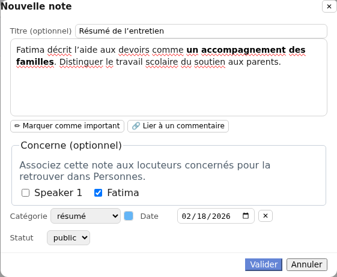
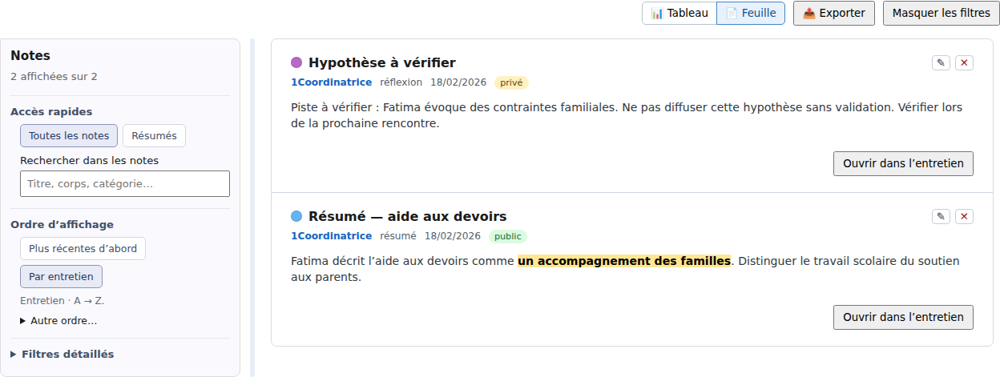

Importer et traiter → Entretien et Corpus
Écrire et consulter des notes
Les notes vous permettent de garder un résumé, une observation de terrain ou une piste d’analyse à côté d’un entretien, sans modifier sa transcription. Vous pouvez en écrire plusieurs, puis les relire ensemble à l’échelle du corpus.
Une note concerne l’entretien ou certains de ses locuteurs. Un commentaire, lui, est attaché à un passage précis de la transcription. Une note ne remplace pas non plus une variable destinée à des réponses comparables.
Les étapes ci-dessous sont vérifiées dans un corpus local. Pour essayer, ouvrez votre copie de Entretiens déjà importés, puis 1Coordinatrice. Si vous avez suivi le chapitre sur les locuteurs, Speaker 0 porte maintenant le nom Fatima.
Créer une note dans l’entretien
- Ouvrez l’entretien avec le crayon de sa carte, puis cliquez sur l’onglet Notes à gauche de la transcription.
- Cliquez sur + Note.
- Saisissez un titre, si utile, puis votre texte dans la grande zone de saisie.
- Choisissez la Catégorie, vérifiez la Date et le Statut. Une nouvelle note est privée par défaut.
- Cliquez sur Valider, puis attendez l’état à jour en haut de l’entretien.
Dans l’exemple, créez Résumé de l’entretien, de catégorie résumé : « Fatima décrit l’aide aux devoirs comme un accompagnement des familles. Distinguer le travail scolaire du soutien aux parents. » Gardez une hypothèse non vérifiée dans une autre note, de catégorie réflexion, pour ne pas la confondre avec ce résumé.
La date proposée est celle du jour ; vous pouvez la changer ou la retirer avec la croix Pas de date. Elle ne remplace pas la date de création utilisée par le tri du corpus.

Annuler abandonne le contenu saisi dans cette fenêtre sans remplacer la note enregistrée. Ne comptez pas sur un brouillon non validé pour conserver votre travail après fermeture de l’entretien.
Choisir une catégorie et les locuteurs concernés
Les catégories post-collecte, résumé, réflexion et générale aident à distinguer les usages des notes. Elles sont indépendantes des thèmes : choisir une catégorie ne code aucun passage de la transcription.
Pour créer une catégorie, choisissez autre… dans la liste, puis cliquez sur le bouton ＋. Donnez un nom, choisissez éventuellement une couleur et cliquez sur Créer. La catégorie devient disponible dans le corpus. Le carré de couleur d’une catégorie existante change sa couleur pour toutes les notes qui l’utilisent.
Les catégories sont communes au corpus. Créer une catégorie ou changer sa couleur prend effet immédiatement. Le bouton Annuler de la note ne retire pas cette catégorie et ne rétablit pas son ancienne couleur.
Dans Concerne (optionnel), cochez un ou plusieurs locuteurs, par exemple Fatima. Sans case cochée, la note reste générale à l’entretien. Cette association ne duplique pas le texte ; elle permet de retrouver la note dans la fiche de personne si le locuteur y est relié. Pour changer cette association, utilisez la fenêtre d’édition de la note dans l’entretien.
Relire, corriger et retrouver ses notes
Dans la vue cartes
La vue 🃏, intitulée Vue cartes, présente les catégories, dates, statuts et titres. Une carte avec un titre ne montre pas le corps de la note : le texte n’a pas disparu. Cliquez sur son crayon Éditer pour l’ouvrir, ou passez en vue feuille pour tout relire.
Le crayon ouvre une fenêtre : cliquez sur Valider pour appliquer les changements, ou sur Annuler pour les abandonner. Pour changer l’ordre des notes dans cet entretien, glissez une carte sur une autre.
Dans la vue feuille
Cliquez sur 📄, intitulé Vue feuille (toutes les notes à la suite, éditables). Les corps des notes se lisent à la suite. Vous pouvez les corriger directement ; pour le titre, quittez le champ pour appliquer la saisie.
Dans cette feuille, les changements sont enregistrés directement. Il n’y a pas de bouton Valider ou Annuler pour chaque saisie. Attendez à jour avant de quitter l’application, puis rouvrez l’entretien pour vérifier le résultat.
Pour faire ressortir une idée, sélectionnez des mots dans la note puis cliquez sur ✏ Marquer comme important. Pour retirer la marque, placez le curseur dans ce passage et cliquez de nouveau sur le bouton. Vous pouvez faire ce geste dans la fenêtre de saisie ou dans la feuille.
Si des commentaires existent déjà dans la transcription
Sélectionnez un passage de la note et cliquez sur 🔗 Lier à un commentaire, puis choisissez le commentaire proposé dans le menu. Le passage est mis en italique avec une référence ; cliquez sur cette référence pour rejoindre le passage commenté dans la transcription. Le texte du commentaire n’est pas copié dans la note.
Rechercher et copier
Le bouton 🔍 Rechercher et filtrer les notes ouvre la recherche de cet entretien, avec des filtres par catégorie, statut ou présence d’un passage important ou lié à un commentaire. La croix Effacer la recherche et les filtres retrouve toutes les notes.
Le bouton 📋 Copier les notes affichées dans le presse-papier copie celles que vos filtres conservent, dans leur ordre affiché, avec leurs titres et informations. Il peut donc copier des notes privées. Vous pourrez coller ce texte dans un autre document ; cela ne modifie pas les notes du corpus.
Comprendre privé et public
Le statut indique notamment quelles notes peuvent accompagner un export de transcription lorsque l’option d’inclusion des notes est choisie : les notes publiques sont retenues, pas les notes privées.
Privé ne signifie pas « visible par moi seulement ». La note reste dans l’entretien et peut être lue par une personne qui a accès à ce corpus, même en lecture seule. Ce statut n’est ni une protection par mot de passe ni une règle d’accès personnelle.
L’export des notes depuis la vue Corpus suit une autre règle : il reprend les notes affichées, y compris les privées. Le presse-papier suit également les notes affichées. Contrôlez donc les filtres et le contenu avant tout partage.
La pseudonymisation de la transcription ne remplace pas automatiquement les noms ou informations sensibles de vos notes. Relisez-les séparément, qu’elles soient privées ou publiques.
Consulter les notes de tout le corpus
- Revenez au Corpus par le fil de navigation, puis ouvrez l’onglet Notes.
- Choisissez 📊 Tableau pour une liste compacte, ou 📄 Feuille pour lire les corps des notes.
- Utilisez la recherche, Résumés ou Filtres détaillés pour retenir les notes utiles.
- Cliquez sur le nom de l’entretien, ou sur Ouvrir dans l’entretien en vue feuille, pour revenir à ses notes.
Ce sont les mêmes notes, pas des copies. Dans un corpus local, leur crayon Modifier la note permet de changer le titre, le corps, la catégorie, la date et le statut. Validez la fenêtre pour enregistrer. Pour modifier Concerne ou créer une liaison vers un commentaire, ouvrez plutôt l’entretien.

- Toutes les notes retire les filtres, sans changer le tri. Résumés retire aussi les autres filtres, puis garde la catégorie résumé.
- Plus récentes d’abord utilise la date de création, pas la date renseignée dans la note. Par entretien regroupe les entretiens de A à Z. Ces boutons ne retirent pas les filtres.
- Autre ordre… permet notamment de trier par date de la note, titre ou catégorie. Ces tris ne changent pas l’ordre manuel des cartes dans un entretien.
- Filtres détaillés combine catégorie, entretien, statut, dates, passages importants et liens vers des commentaires. Le nombre près de ce bouton rappelle les filtres actifs ; « affichées sur » indique combien de notes restent retenues.
Si un message signale des entretiens indisponibles, la liste peut être incomplète. Si une actualisation échoue, le dernier résultat lisible peut rester affiché : ne le prenez pas pour un inventaire nécessairement à jour.
Exporter les notes affichées
- Dans l’onglet Notes du corpus, réglez les filtres et l’ordre souhaités.
- Si vous ne voulez pas inclure les notes privées, ouvrez Filtres détaillés et choisissez Public dans Statut.
- Vérifiez les notes retenues et cliquez sur 📤 Exporter.
- Retrouvez le fichier notes_….md à l’emplacement de téléchargement ou d’enregistrement choisi par votre système.
Le fichier Markdown (.md) est un document texte lisible dans un éditeur de texte ou un logiciel prenant en charge ce format. Il contient les notes filtrées dans l’ordre affiché, leurs titres, catégories, entretiens, dates et statuts. Les passages importants sont représentés en gras ; les liens vers des commentaires sont accompagnés de leurs références disponibles.
Cet export n’est pas pseudonymisé et peut inclure des notes privées. Il ne contient pas tout le corpus et n’en constitue pas une sauvegarde. Exporter ne change ni les notes ni la transcription ; vérifiez le fichier avant de le diffuser.
Supprimer une note
- Dans l’entretien : la croix Supprimer d’une carte retire la note immédiatement, sans confirmation.
- Dans la vue Corpus : la croix Supprimer la note demande une confirmation. Annulez pour la conserver, ou confirmez pour la retirer.
La note disparaît des deux vues, mais la transcription et ses commentaires restent en place. Copier ou exporter un texte n’est pas une commande de restauration : conservez les informations utiles avant de supprimer.